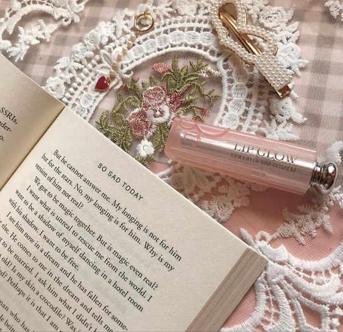
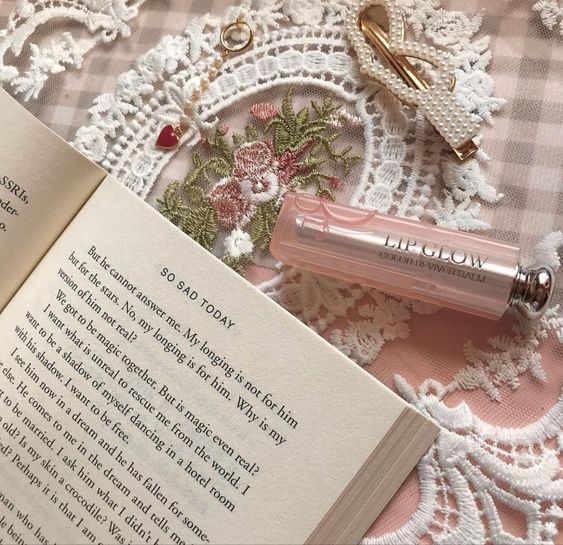

ALTHIA NICOLE P.
November 16, 2006 - Costa Leona
What am I?
A flower that's waiting to bloom yet scared to do everything it takes to bloom. I'm someone surrounded with flowers shining and blooming the entire garden. Because of this, the flower that I'am can't properly bloom as I'm stuck in a garden with better flowers fitting each other. Although I'm similar to them, however, I always become the lesser when being beside them. In spite of this, I'am a flower who sees the other flowers as an inspiration to become better and to blossom like them.
A quick tour to my life.
What's inside life currently
Nothing much has happened to me that I would consider as remarkable part of my life. But to the past months that I have been attending school, this year is by far a memorable school year for me. It is my last year of junir high school which means, after this, I would already be apart with the people I have been together from the start of high school. Other than that, a lot of trivial things also happened to me such as catching feeling, I don't know why but this school year I have been liking more people than I would before, haha high school life. Although I would consider all of them as infatuation only, that's why I would forget about them easily haha. Anyways, hoping that I would end the school year successfully with a toga and certificate beside me.
'Cause you could be the one that I love
I could be the one that you dream of
Message in a bottle is all I can do
Standin' here, hopin' it gets to you
- Taylor Swift

- Oprah Winfrey
note. . . . . . . . . . . . . . . . . . . . . . . . . .
Travel
• I have been longing to travel to different countries, but the one that interests me the most is traveling to Switzerland. I would like to villages and high alps of switzerland, as well as their all clear lakes.
Dream
• Becoming an Architect is a dream I have discovered ever since I stepped in high school. It is something that came to me unexpectedly and is something I wished to become true. One of the reasons I'm doing my best (not really) is because of this dream.Music
• I don't listen to a specific genre of music, I only listen to those that I came to like ever since I first heard about it. Taylor Swift and SZA are the artists that I usually listen the past days(?), probably monthsOther Information
• My home is filled with animals. My family have 3 cats, 3 dogs, fishes, a rabbit, a chicken, and tons of birds.luvies


 
